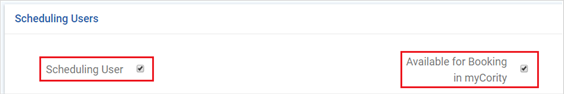

There are two checkboxes in the User profile for configuring a user’s scheduling availability: Scheduling User and Available for Booking in myCority.
When the Scheduling User checkbox is selected, appointments can be assigned to that user. When Available for Booking in myCority is selected, appointments that were created through myCority can be assigned to that user. The user can then reassign the appointment to a different scheduling user, if necessary.
Note: The Available for Booking in myCority checkbox will only be available if the Scheduling User checkbox is selected.

When a myCority user creates a new appointment entry, it will be randomly assigned to a scheduling user who is associated with the selected health center, and who has the Available for Booking in myCority checkbox selected in the User profile. If there are no scheduling users for whom this setting is selected, the appointment will be assigned to the first scheduling user in the Users list.
The available times can be configured in the Cority platform. To do this, select Occupational Health > Appointments > Filters, and select the health center. Then select the Settings tab and make the necessary changes.
By default, time slots will be thirty minutes in length. To change the time slot duration, open the Schedule Activity Codes look-up table in the Cority platform, select an activity, and change the duration.
When a myCority user creates a new appointment entry, the Appointment Details form will display a list of available time slots. If a time slot is already taken, it will not display in the Appointment Details form. If the user is booking an appointment for today, the first time slot, if available, will be the current time rounded up to the nearest five minutes.
If no scheduling availability has been configured for a user, all timeslots will be available in the Appointment Details form.